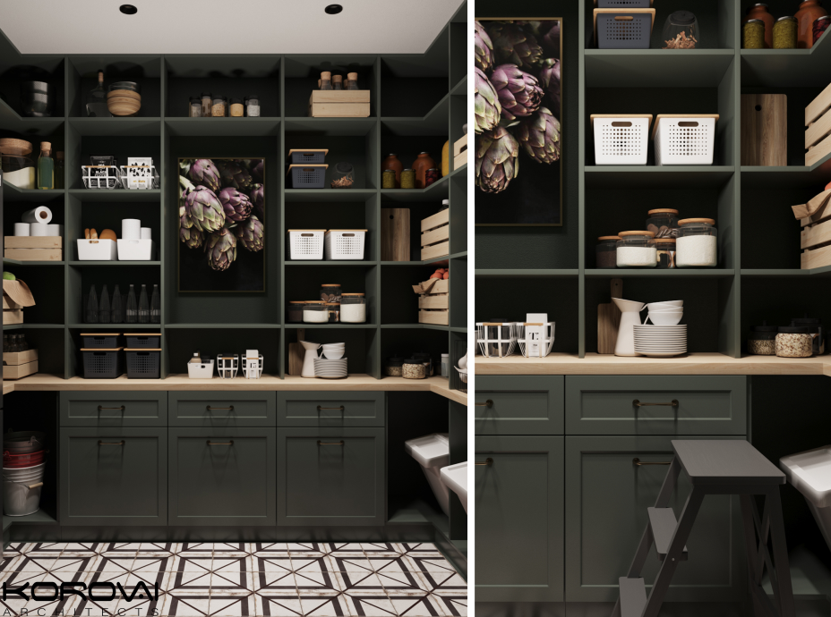
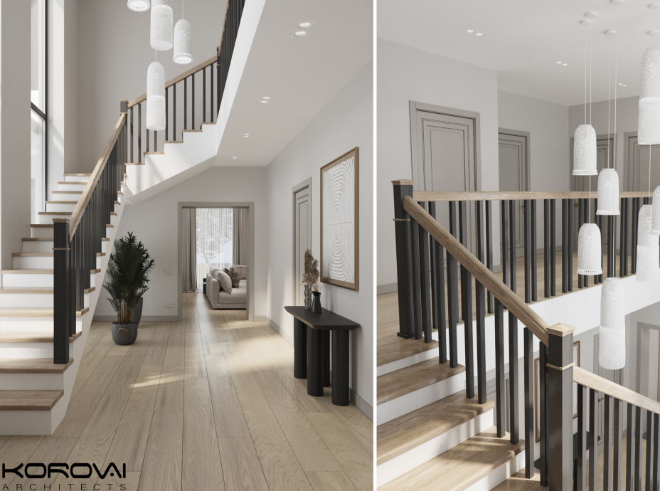

22 червня 2022
Інтер'єр - це здійснення світогляду людини. Від того, які власник має хобі, як відпочиває, скільки часу проводить вдома, залежить стиль та наповнення його будинку.
Ще один важливий критерій – характер власника будинку. Залежно від темпераменту, влучними будуть різні стилі інтер'єру або їх елементи.
Якщо ви не можете визначитись з дизайном наша команда спеціалістів допоможе вам зробити інтер'єр мріі. Ще один спосіб вибрати стиль відштовхнутися від конкретного матеріалу.
Якщо вам подобається бетонне покриття, доведеться вибирати те, що з ним добре поєднується. Однак без дизайнерського досвіду складно побудувати дизайн навколо одного матеріалу.
Тому, якщо ви підглянули класну плитку з фактурою мармуру або каменю, і хочете якось обіграти її в інтер'єрі, краще звернутися до професіонала.
Джерелом натхнення можуть стати Pinterest, Google або профільні журнали. Однак, знову ж таки, правильно поєднати технічні можливості будинку зі стильовими побажаннями під силу лише досвідченим спеціалістам - нашій команді Korovai Architects.
Найкращий спосіб не помилитися з вибором матеріалів це, звичайно, звернутися до дизайн-студіі Korovai Architects. Адже досвідчений фахівець, провівши кілька зустрічей із клієнтом, здатний зрозуміти що потрібно тій чи іншій людині.
Будинок - це насамперед продовження його господаря. Тому дуже важливо працювати саме з людиною, перетворюючи її характер та потреби у його особистий стиль, у його власний інтер'єр.
І наша команда втілить ваші побажання.
Наші дизайнери із задоволенням допоможуть підібрати ідеально підібрану саме для вас кольорову гамму в інтер'єрі. В нашому досвіді багато реалізованих проєктів. Проєкутвання будинку від початку до реалізації ремонту економить кошти на більше ніж 20%.
Щоб правильно вибрати стиль інтер'єру, прислухайтеся до себе: врахуйте ритм свого життя та уподобання, а також подумайте, як ви хотіли б удосконалити свій побут.
Чи плануєте звернутися до дизайнера?
Він допоможе підібрати стилістику, в якій вам буде найкомфортніше.
Korovai architects – Ми створюємо сучасні затишні інтер'єри для вас та ваших близьких. Навіть якщо ви не знаєте як має виглядати будинок, дизайнери Korovai Architects допоможуть перетворити вашу мрію на реальність. Ми з любов’ю підходимо до кожного замовника та проєкту.